Boolean Algebra
Introduction (AND, OR, and NOT)
Boolean algebra is a type of algebra involving variables that can only have two states: 1 (true) or 0 (false). It follows, then, that there are only a finite number of value combinations for different variables, unlike variables from the set of real numbers, which can have an infinite number of states. This will become important soon when we look at "truth tables." First, though, let's define a few important operators: AND, OR, and NOT:
- AND
When the AND operator is applied to two variables, the result can only be true if the both the first variable and the second variable are true.
For instance, if I paid for a hamburger and a cheese steak at the food trucks for lunch, my request would only be satisfied if I got both of them (of course, I would never do that, because I am a healthy eater). If I only got a hamburger, I only got a cheese steak, or I got neither, then I would have to ask for a refund (the result would be false in these three cases). Notice that there are only 4 (22) cases for two variables.
- AB
- A*B
- A /\ B
- A && B
Above are four different ways to write "A and B." The ACSL exam usually uses the first one (and maybe the second one sometimes). I have most often seen the third one used in mathematical papers about logic, and the fourth one is used in many programming language for Boolean variables (e.g. C, C++, Java, Perl).
- OR
When the OR operator is applied to two variables, the result can be true if the first variable is true, if the second variable is true, or if both are true. The only time the OR operator results in false is when both variables are false.
Technically, then, if a waiter asks me if I want a soup or a salad, I am responding affirmatively if I say that I want a soup, a salad, or both of them (if the waiter intends that I should have at most one, then he should ask if I either want a soup or a salad, which we will see later with the XOR operator).
- A + B
- A \/ B
- A || B
Above are three different ways to write "A or B." The ACSL exam usually uses the first one, and the third one is used in programming languages with Boolean variables and TRUE/FALSE conditions.
NOTE: Using the first notation system on two variables that are true, we get 1+1=1. This may look weird, but remember, this isn't the algebra we're used to dealing with; it's Boolean algebra. Hence, this statement is totally valid here.
- NOT
When the NOT operator is applied to a variable, the result is the opposite truth condition of the variable. Therefore, "NOT true" is false, and "NOT false" is true. Pretty logical, eh?
- 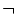 A
- !A
- A'
Above are four different ways to write "NOT A." The first one with the line on top of the variable is used in ACSL, and the third is used in computer programming. The fourth way is the most convenient for me to write in HTML, so I will start using it as we get to more complicated examples.
Truth Tables
As I mentioned earlier and I hope you could see by some of my above examples, there are only a finite number of combinations of different values for all of the variables. Because of this, we can organize every single case that exists into a table, called a "truth table," by using the basic counting principle. This makes it very straightforward to find solutions. Let's try to make a truth table for the AND operator below:
So now that we have every case written out in an organized fashion, it's easy to see how the answer, A*B, is only true when both A and B are true.
Now it's time to quickly discuss the combinatorics of charting all of the possible values of the operands in these tables. Since each variable can be either 1 or 0, there are two values possible for each operand. Thus, given n different variables in an expression, there are 2n cases to check. Hopefully, this will make more sense with the following example:
Example: Chart all of the possible solutions for A*(B+C), and figure out which values of A, B, and C make the statement true
| 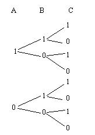 |
To solve these problems, you must be able to chart out all of the possible combinations of values for A, B, and C. With three bits, we know that the minimum value is zero, and that the maximum value is seven (1+2+4), for eight possible states total. Similarly, with three boolean variables, eight combinations will exist (see the counting tree to the left). With this in mind, it should be easier to understand how to develop a truth table using the methods below.
|
| A | B | C | (B+C) | A * (B+C) |
| 1 | 1 | 1 | 1 | 1 |
| 1 | 1 | 0 | 1 | 1 |
| 1 | 0 | 1 | 1 | 1 |
| 1 | 0 | 0 | 0 | 0 |
| 0 | 1 | 1 | 1 | 0 |
| 0 | 1 | 0 | 1 | 0 |
| 0 | 0 | 1 | 1 | 0 |
| 0 | 0 | 0 | 0 | 0 |
|
- Following the order of operations, set up a column with B+C (B or C), and evaluate that before evaluating A*(B+C).
- As mentioned before, since there are three variables, we know that there will be 23, or 8, different cases for values of A, B, and C, so set up eight rows for all of the possible cases
- Half of the values of A will be true, and half of the values will be false. Hence, have the first four cases of A be true, and have the last four be false.
- For the first four cases in which A are true, half of the values of B will be true, and the other half will be false. Half of the Bs will also be true for the four cases in which A is false, and half of them will be false.
- Alternate true or false for C in all of the cases, because one will be true, and one will be false for each pair of Bs that are true and false
- Now that we have all of the cases charted out, evaluate (B+C) for every case. Then, to fill in the column with the solutions for each case, we note that the final expression can only be true if both (B+C) and A are true. This condition is only satisfied in the first three cases, so they are the combinations we are looking for:
1*(1+1)=1
1*(1+0)=1
1*(0+1)=1
|
If it helps you to see why the first three cases yield a true value for the final expression, it may help to come up with an example of the situation and to talk it out until you are comfortable with Boolean algebra. For instance, suppose that Steve (A), Jiaqi (B), and I (C) were to teach a computer club lesson on number systems. Steve had prepared to teach binary, and Jiaqi and I had each prepared to teach octal and hexadecimal. The computer club meeting could go on as long as someone was there to teach everything (both binary AND octal/hexadecimal would have to be covered). The lesson could go on if Jiaqi was there, I was there, or both of us were there, but it could not go on if Steve was absent. This corresponds perfectly with the above table.
(Of course, we would never actually have to worry about that situation, because the trusty co-presidents of the computer club know all of the concepts like the back of their hands)
The EXCLUSIVE OR operator
Given two variables, the XOR function evaluates to true if exactly one of the variables is true. Unlike OR, therefore, exclusive or evaluates to false if both variables are true.
There are actually two simple ways to express this operation using the three operators that we already know (it helps to talk it out to figure out how):
- We know that XOR will be true if either A is true and B is false, or if A is false and B is true
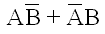
- We know that XOR will only be true if either A or B is true, but not both of them
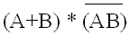
Even though they are rather concise, these two ways are too cumbersome to write out in long expressions. Therefore, XOR has its own symbol (YAY!):
 | means "A XOR B." |
Now, let's look at a truth table for an XOR acting on two variables:
De Morgan's Laws
De Morgan's Laws are two very important identities that resurface perpetually throughout the ACSL exam. Like everything in Boolean algebra, though, they are both very logical, so it shouldn't be very hard to remember them. I will come up with a practical example for each law to make it even easier. Shall we go on, then? Yes, I think it's time...
LAW #1:
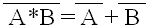
| A | B | 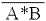 | 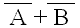 |
| 1 | 1 | 0 | 0 + 0 = 0 |
| 1 | 0 | 1 | 0 + 1 = 1 |
| 0 | 1 | 1 | 1 + 0 = 1 |
| 0 | 0 | 1 | 1 + 1 = 1 |
|
Practical Example: I'm writing a Windows program that I want to continue as long as the user is not pressing "ALT F4." A will be true if the user is holding down ALT, and B will be true if the user is holding down F4.
We are allowed to continue running through an animation loop as long as the user isn't holding down both keys: (AB)'. Another way to say this is that we can continue running the program as long as A isn't being pressed, B isn't being pressed, or neither are being pressed: A' + B'.
|
LAW #2:
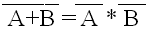
| A | B | 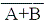 | 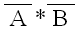 |
| 1 | 1 | 0 | 0*0 = 0 |
| 1 | 0 | 0 | 0*1 = 0 |
| 0 | 1 | 0 | 1*0 = 0 |
| 0 | 0 | 1 | 1*1 = 1 |
|
Practical Example: To watch a rated R movie, you should neither be under 17 years of age, nor should you be immature. Let A represent being under 17 years of age and B represent being immature.
I am allowed to watch the movie as long as I am mature and over 17 years of age; I cannot watch it if I am not 17 and mature, if I am 17 but I am immature, and if I am both under 17 and immature: (A+B)'. Another way to say this is that I must both be NOT immature (double negative=mature) AND NOT under 17 (double negative=over 17): A'*B'.
[I'll leave it up to you to decide whether or not I match the fourth case in the truth table to the left :-D]
|
***De Morgan's laws are sometimes known as the "line breakers" for obvious reasons. It is easy to remember how they work; you break the line and switch the operator from AND to OR or vice versa, depending on the situation.
Other properties and identities
Most of the properties below are very logical (that's what I love about Boolean algebra), so you can usually get by if you forget one of them. You can also easily verify any of them by making a truth table, or you can think of them logically. Because of their simplicity, I'm simply going to list them this time without much of an explanation (contact me if you do need an explanation, though):
| a + (b + c) = (a + b) + c | a(bc) = (ab)c | (Associative) |
| a + b = b + a | a*b = b*a | (Commutative) |
| a + (b + c) = (a + b) + c | a(bc) = (ab)c | (Associative) |
| a * (b + c) = (a + b) + (a + c) | a * (b+c) = ab + ac | (Distributive property) |
| a + ab = a | a*(a+b) = a | (Absorption) |
| a + a' = 1 | a * a' = 0 | (Complements) |
| a + a = a | a * a = a | (Identity property) |
| a + 0 = a | a * 1 = a | a + 1 = 1 | a * 0 = 0 | (Boundedness) |
| (a')' = a | (a double negative is a positive) |
ACSL Examples
Now, let's look at some typical ACSL questions (that's what we're here for, right?)
- (Adapted from the ACSL competition in 1996)
Which ordered triples make the following expression true?
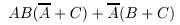
Before we check cases, we should see if we can simplify this at all (NOTE: I will be using A' to represent "NOT A" , because it is more convenient):
| Step | Reason |
| AB(A' + C) + A'(B + C) = A*B*(A') + A*B*C + (A')*B + (A')*C | Distributive property |
A*B*(A') + A*B*C + (A')*B + (A')*C = A*B*C + (A')*B + (A')*C | Complements (A*A' = 0) |
ABC + A'B + A'C [ (A AND B AND C) OR (NOT A AND B) OR (NOT A AND C) is certainly easier to look at. Now let's break this down into a truth table:
| A | B | C | ABC | A'B | A'C | ABC + A'B |
| 1 | 1 | 1 | 1 | 0 | 0 | 1 |
| 1 | 1 | 0 | 0 | 0 | 0 | 0 |
| 1 | 0 | 1 | 0 | 0 | 0 | 0 |
| 1 | 0 | 0 | 0 | 0 | 0 | 0 |
| 0 | 1 | 1 | 0 | 1 | 1 | 1 |
| 0 | 1 | 0 | 0 | 1 | 0 | 1 |
| 0 | 0 | 1 | 0 | 0 | 1 | 1 |
| 0 | 0 | 0 | 0 | 0 | 0 | 0 |
Hence, the ordered tripes that make this statement true are (1,1,1), (0,1,1), (0,1,0), and (0,0,1).
- Simplify the following expression: ((A+B)' * (AB))'
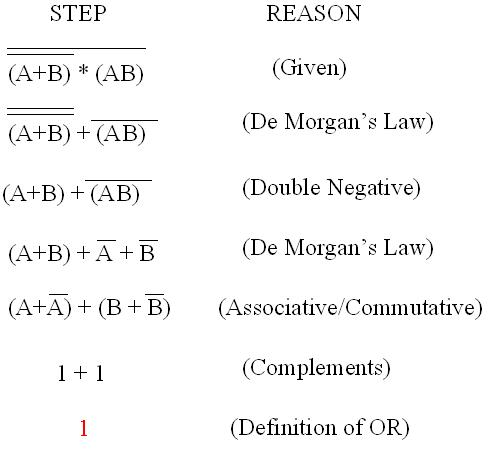
This statement actually simplifies to true in all cases. The reason I gave this example is because the ACSL exam always makes you use De Morgan's Law a bunch of times in one problem somewhere along in the competition. Anyway, it seems a little strange that every solution should be true, so let's check our answer with a truth table (always a good idea if you have time):
| A | B | (A+B)' | AB | ((A+B)' * (AB))' |
| 1 | 1 | 0 | 1 | (0 * 1)' = 1 |
| 1 | 0 | 0 | 0 | (0 * 0)' = 1 |
| 0 | 1 | 0 | 0 | (0 * 0)' = 1 |
| 0 | 0 | 1 | 0 | (1 * 0)' = 1 |
Hah! It's "true," then.
Well, thanks for taking the time to read this tutorial (it took at lot of time, so it's always good to have my work appreciated). Hopefully I explained everything adequately.
Outside Source Bibliography
- ACSL official test question
- Allaboutcircuits.com
- Discrete Math: Pennsylvania Governor's School for the Sciences 2006 by Douglas E. Ensley
- Wikipedia